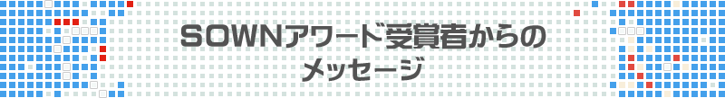

協力：国際ゲーム開発者協会日本（IGDA日本）
センス・オブ・ワンダーナイト2016
Mushroom 11
Itay Keren. / Untame
BEST GAME DESIGN AWARD
1What's your background in making games?
I've been making games since I was very young, age 8 or so. In fact, that's the reason why I learned to program, so I could make the things I could see at the video game arcades! When I was growing, there was a steep curve for making high end games and I spent much of my time making tech libraries instead of making games. After a few years' detour as server developer, I was able to get back to gaming and finally spend more time on design than on technology, though I always enjoy that part as well.
2How much time did you spend working on the game?
Mushroom 11 was created in the January 2012 Global Game Jam event. I've been working on it ever since, which brings it to 3.5 years or so, but I've been focusing on it full time only since 2013.
3How did you come up with the concept?
As always in Global Game Jam event, all games must revolve a certain theme in some way. The theme was the Ouroboros, or the snake eating its tail. Since I'm a fan of platformers, I immediately thought that of the cyclical nature of the symbol, and wished to make a game that connects destruction and growth. I made a prototype where the player controls a blob that's made of individual cells, and as soon as any cell is erased, a new one appears randomly - but the only control was the destruction. With a lot of work, this prototype has evolved to what it is today.
4What development tools did you use?
Mushroom 11 is created with the Unity game engine. I love working with such mature environment and huge community. Sometimes I miss the old days of working on nuts and bolts of the system, but then I remember how much work would have to be spent on technical barriers, work that has already been done for me by some really great engineers!
5What were the significant changes between the presented games and games you developed before?
As you find your voice as a designer, you learn to listen to yourself instead of to what your publisher or even what you think the audience wants. In previous projects I made some compromises that originated from trying to please too many players, and as it happens this sometimes backfires by missing its audience completely. In this game I'm focusing on what I enjoy as a player and as a designer with almost no compromises, and I believe that many players would appreciate it more.

6What is your goal as a game developer?
Sustainability. Honestly, I enjoy what I do so much and I'd love to be able to keep on doing it.
7Please write a message to future SOWN attendees regarding your expectation and feeling about being selected to be a finalist.
We've been following SOWN and TGS for years, and we can't express how delighted we were to find out about this nomination (not to mention finally getting to go to Japan). We hope that you come by our booth, check out the game and hopefully share our excitement for this unique project!


- Plug & Play
- Mario von Rickenbach, Michael Frei / Etter Studio
BEST ARTS AWARD / AUDIENCE AWARD - That is a mystery.

- Reelblade: Battle of the High Seas
- Yuichiro Katsumoto / Project Reelblade
BEST THECHNOLOGICAL GAME AWARD - 「鞭から剣へと瞬時に切り替わるニンジャトラックの特徴を活かした、幅広い年齢層が楽しめる体感型のゲーム」という私たちのリクエストに対して、SUTD Game Labは「鞭状態でモンスターを釣り上げ、剣状態でモンスターを倒す、アクションゲーム」に仕上げてくれました。

- Tough Coded: Live
- Fernando Sarmiento / Little Nando
BEST EXPERIMENTAL AWARD / BEST PERESENTATION AWARD - Tough Coded: Live is a Live Videogame Experience. It's sort of like an audiovisual experience. The idea comes from my VJ years.